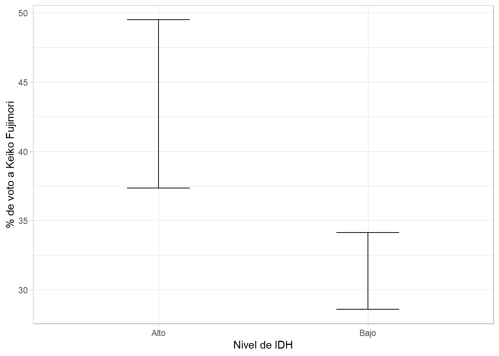
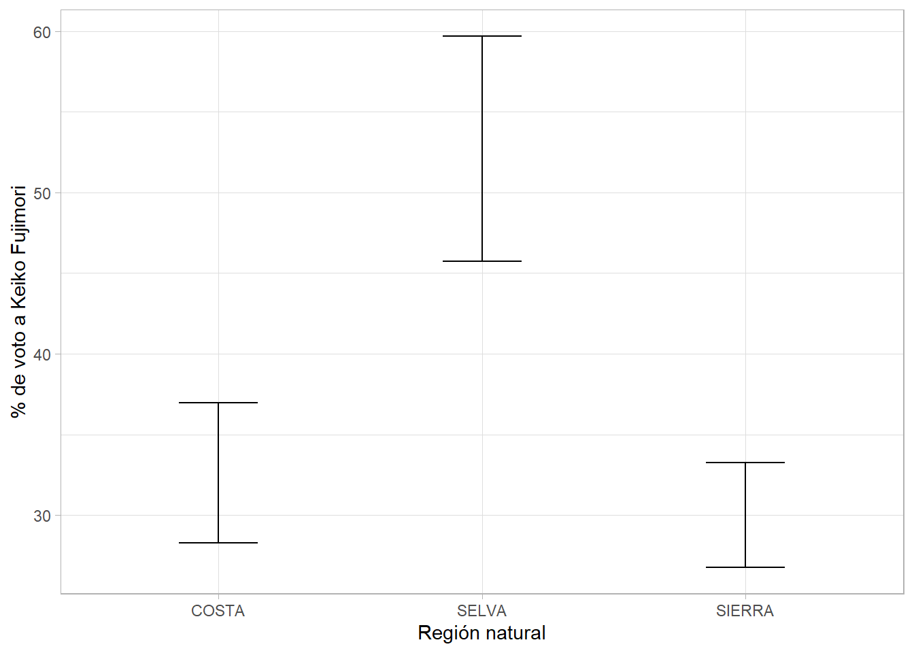
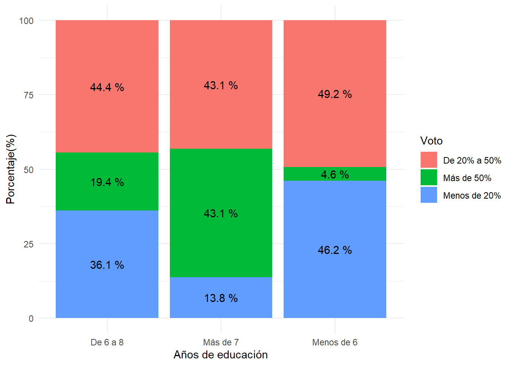

FACULTAD DE CIENCIAS SOCIALES - PUCP
Curso: SOC294 - Estadística para el análisis sociológico 1
Semestre 2024 - 2
library(rio)
library(dplyr)
library(psych)
library(FactoMineR)La base de datos está a nivel país distintas variables que ayudan a crear el indicador de desigualdad de género (DesigualdadGenero). Además, todas las variables han sido escaladas del 0 al 10. Estas variables son
MLAutonomia: Mide que tanto el sistema legal protege derechos reporductivos de las mujeres
MLViolencia: Mide que tanto el sistema legal protege a las mujeres de la violencia
VozPolítica: Presencia de mujeres en el parlamento
LibertadMov: Porcentaje de mujeres que declaran no sentirse seguras en las calles
DesconfianzaSJ: Porcentaje de mujeres que no confian en el sistema de justicia
SecundariaC: Porcentaje de población con secundaria completa
DesempleoMuj: Ratio de desempleo de muejeres frente a hombres
CuentaF: Porcentaje de mujeres que cuentan con una cuenta en el sistema financiero
Recuerda que solo pueden entrar al análisis variables númerica, también dejaremos por fuera el indicador de desigualdad ya que fue creado a partir de las otras variables. Es decir, utilizaremos desde MLautonomia hasta Cuenta F
data0 = import("desigualdad_v2.xlsx")names(data0)## [1] "Pais" "DesigualdadGenero" "MLAutonomia"
## [4] "MLViolencia" "VozPolitica" "LibertadMov"
## [7] "DesconfianzaSJ" "SecundariaC" "DesempleoMuj"
## [10] "CuentaF"Le asignamos el id de cada país a la fila, es decir, asignamos los valores de la primera columna como el nombre identificador de la fila.
rownames(data0)<-data0[,1]Ahora dejaremos por fuera las variables Pais y DesigualdadGenero
data0 = data0 %>%
select(-Pais,-DesigualdadGenero)Revisemos que todas las variables sean numéricas
str(data0)## 'data.frame': 121 obs. of 8 variables:
## $ MLAutonomia : num 7.5 0 7.5 5 0 0 0 0 7.5 0 ...
## $ MLViolencia : num 10 5 5 10 10 10 0 10 10 10 ...
## $ VozPolitica : num 4.52 4.55 4.21 6.35 2.95 ...
## $ LibertadMov : num 5.26 6.6 4.71 5.15 4.76 ...
## $ DesconfianzaSJ: num 9.93 7.4 5.86 7.3 7.02 ...
## $ SecundariaC : num 1.17 9.34 3.8 6.59 9.68 ...
## $ DesempleoMuj : num 9.18 2.19 8.8 4.21 2.84 ...
## $ CuentaF : num 0.558 3.705 2.807 4.992 3.991 ...Ahora revisemos si hay algún valor perdido. Para ello podemos pedir un conteo de todos los perdidos, si sale 0 quiere decir que no hay valores perdidos. Si los hubiera, podemos usar el comando complete.cases.
sum(is.na(data0))## [1] 0Ya que nos cercioramos de eso, podemos continuar.
Paso 1: Realizar una matriz de correlación
library(corrplot)## corrplot 0.92 loadedmatriz = cor(data0) #Recuerda que si fueran ordinales en escala likert, debemos usar polycor y no cor
corrplot(matriz,
type = "lower", #Para que solo aparezca la mitad de la tabla de doble entrada
diag = TRUE, #Para que aparezca la matriz
tl.col = "black") #Para que los nombres de las variables salgan en negro, por default aparecen en rojo.Paso 2: ¿Se puede factorizar?
library(psych)
psych::KMO(matriz) ## Kaiser-Meyer-Olkin factor adequacy
## Call: psych::KMO(r = matriz)
## Overall MSA = 0.73
## MSA for each item =
## MLAutonomia MLViolencia VozPolitica LibertadMov DesconfianzaSJ
## 0.83 0.66 0.75 0.73 0.60
## SecundariaC DesempleoMuj CuentaF
## 0.70 0.85 0.72Debemos analizar el overall MSA, tenemos que obtener un valor superior a 0.5 para afirmar que se puede aplicar la técnica a este grupo de variables.
Al ser una prueba, el Test de Bartlett tiene una hipótesis nula que es “la matriz de identidad y la matriz de correlación de las variables son iguales”. Si el pvalue es menor o igual a 0.05, podemos rechazar que sean iguales.
cortest.bartlett(matriz,n=nrow(data0))$p.value>0.05 ## [1] FALSEEste código solicita solo el pvalue de la prueba y pregunta si el valor supera el 0.05, si el resultado es TRUE quiere decir que el pvalue supera el 0.05. Es decir, para poder afirmar que ambas matrices son distintas debemos esperar que el resultado sea FALSE
Paso 3: Determinar cuántos factores o variables latentes puede redimensionar la data
Por el gráfico de sedimentación
fa.parallel(matriz, fm="pa", fa="pc", main = "Scree Plot")## Warning in fa.parallel(matriz, fm = "pa", fa = "pc", main = "Scree Plot"): It
## seems as if you are using a correlation matrix, but have not specified the
## number of cases. The number of subjects is arbitrarily set to be 100## Parallel analysis suggests that the number of factors = NA and the number of components = 1¿Cómo se interpreta el gráfico?
Se cuenta los puntos (en este caso triángulos) que están por encima de la linea roja. En este caso se propone un factor o variable latente.
eigenf = eigen(matriz)
eigenf$values## [1] 3.0714888 1.2071756 1.0772113 0.8265806 0.7015968 0.5154084 0.3600658
## [8] 0.2404727El número de fatores que se propone depende de cuántos números son mayores a 1. En este caso son 3 números, por lo tanto se concluye que se podría agrupar en 3 factores.
Se puede obtener la misma conclusión usando el comando PCA
library(factoextra)## Loading required package: ggplot2## Warning: package 'ggplot2' was built under R version 4.2.3##
## Attaching package: 'ggplot2'## The following objects are masked from 'package:psych':
##
## %+%, alpha## Welcome! Want to learn more? See two factoextra-related books at https://goo.gl/ve3WBalibrary(FactoMineR)
res.pca <- PCA(data0, graph = FALSE)
eig.val <- get_eig(res.pca)
eig.val## eigenvalue variance.percent cumulative.variance.percent
## Dim.1 3.0714888 38.393610 38.39361
## Dim.2 1.2071756 15.089695 53.48331
## Dim.3 1.0772113 13.465141 66.94845
## Dim.4 0.8265806 10.332257 77.28070
## Dim.5 0.7015968 8.769960 86.05066
## Dim.6 0.5154084 6.442605 92.49327
## Dim.7 0.3600658 4.500822 96.99409
## Dim.8 0.2404727 3.005909 100.00000Paso 3: Análizar qué variables componen cada variable latente Consideremos el número de factores propuesto por la segunda técnica. Si hubieramos optado por realizar un solo factor, deberiamos cambiar lo que sigue luego de nfactors.
pc <- principal(data0, nfactors = 3)
print(pc$loadings,cutoff = 0.5) #Para ver las variables y cuanto aportan a cada factor##
## Loadings:
## RC1 RC2 RC3
## MLAutonomia -0.784
## MLViolencia -0.824
## VozPolitica 0.702
## LibertadMov 0.810
## DesconfianzaSJ 0.905
## SecundariaC 0.782
## DesempleoMuj -0.646
## CuentaF 0.763
##
## RC1 RC2 RC3
## SS loadings 2.358 1.709 1.289
## Proportion Var 0.295 0.214 0.161
## Cumulative Var 0.295 0.508 0.669Paso 4: Agregar las variables latentes a la base de datos original Recuerda que los factores se agregan en puntuación z.
matriz = as.data.frame(pc$scores) #Guardamos los factores en una base de datos
data_final = cbind(data0,matriz)
head(data_final)[5:11]## DesconfianzaSJ SecundariaC DesempleoMuj CuentaF RC1
## Afghanistan 9.929078 1.168329 9.180328 0.558324 -2.4822324
## Albania 7.399527 9.339507 2.185792 3.704871 0.6929742
## Algeria 5.862884 3.800122 8.797814 2.806875 -1.6492953
## Argentina 7.304965 6.590678 4.207650 4.992373 -0.1121762
## Armenia 7.021277 9.681457 2.841530 3.990644 0.9169501
## Australia 8.463357 8.981274 2.950820 9.918641 1.2315511
## RC2 RC3
## Afghanistan 1.40781128 -0.26335039
## Albania 0.35134784 0.15716388
## Algeria -0.05470757 0.47965377
## Argentina 0.13398291 0.03700085
## Armenia -0.13275670 -1.22519527
## Australia 1.13436740 -0.54925387library(dplyr)
library(ggplot2)
library(lsr)data = import("Data-provincias.xlsx")¿Existe alguna diferencia en el promedio del voto (%) por Keiko Fujimori (FP) en segunda vuelta según el nivel de IDH (alto/bajo)?
tabla1 = data %>%
group_by(IDH_cat) %>%
summarise(Media = mean(FP, na.rm=T),
LimSup = ciMean(FP, na.rm=T)[1],
LimInf = ciMean(FP, na.rm=T)[2])
tabla1## # A tibble: 2 × 4
## IDH_cat Media LimSup LimInf
## <chr> <dbl> <dbl> <dbl>
## 1 Alto 43.4 37.3 49.5
## 2 Bajo 31.3 28.6 34.1ggplot(tabla1, aes(x=IDH_cat, y=Media))+
geom_errorbar(aes(ymin = LimInf, ymax= LimSup),width=0.3)+
theme_light()+
xlab("Nivel de IDH")+ylab("% de voto a Keiko Fujimori")
t.test(data$FP ~ data$IDH_cat)##
## Welch Two Sample t-test
##
## data: data$FP by data$IDH_cat
## t = 3.7185, df = 33.054, p-value = 0.000741
## alternative hypothesis: true difference in means between group Alto and group Bajo is not equal to 0
## 95 percent confidence interval:
## 5.469224 18.682394
## sample estimates:
## mean in group Alto mean in group Bajo
## 43.42174 31.34593tabla2 = data %>%
group_by(Reg_nat) %>%
summarise(Media = mean(FP, na.rm=T),
LimSup = ciMean(FP, na.rm=T)[1],
LimInf = ciMean(FP, na.rm=T)[2])
tabla2## # A tibble: 3 × 4
## Reg_nat Media LimSup LimInf
## <chr> <dbl> <dbl> <dbl>
## 1 COSTA 32.6 28.3 37.0
## 2 SELVA 52.7 45.7 59.7
## 3 SIERRA 30.0 26.7 33.3ggplot(tabla2, aes(x=Reg_nat, y=Media))+
geom_errorbar(aes(ymin = LimInf, ymax= LimSup),width=0.3)+
theme_light()+
xlab("Región natural")+ylab("% de voto a Keiko Fujimori")
anova=aov(data$FP~data$Reg_nat)
summary(anova)## Df Sum Sq Mean Sq F value Pr(>F)
## data$Reg_nat 2 6763 3382 11.1 2.75e-05 ***
## Residuals 192 58515 305
## ---
## Signif. codes: 0 '***' 0.001 '**' 0.01 '*' 0.05 '.' 0.1 ' ' 1¿Existe alguna diferencia en el voto (%) por Keiko Fujimori (FP) (en segunda vuelta según si es de la sierra o no (Sierra_no)?
tabla3 = table(data$FP_cat,data$Años_educ)
tabla3##
## De 6 a 8 Más de 7 Menos de 6
## De 20% a 50% 32 25 32
## Más de 50% 14 25 3
## Menos de 20% 26 8 30prop= as.data.frame(prop.table(tabla3,2))
prop## Var1 Var2 Freq
## 1 De 20% a 50% De 6 a 8 0.44444444
## 2 Más de 50% De 6 a 8 0.19444444
## 3 Menos de 20% De 6 a 8 0.36111111
## 4 De 20% a 50% Más de 7 0.43103448
## 5 Más de 50% Más de 7 0.43103448
## 6 Menos de 20% Más de 7 0.13793103
## 7 De 20% a 50% Menos de 6 0.49230769
## 8 Más de 50% Menos de 6 0.04615385
## 9 Menos de 20% Menos de 6 0.46153846names(prop)=c("Voto","Años_educ","Porcentaje")ggplot(prop, aes(x=Años_educ,y=Porcentaje*100, fill=Voto))+
geom_bar(stat="identity", position="stack")+
geom_text(aes(label=paste(round(Porcentaje*100,1),"%")),
position = position_stack(vjust = 0.5))+
ylab("Porcentaje(%)")+xlab("Años de educación")+
theme_minimal()
chisq.test(tabla3)$expected##
## De 6 a 8 Más de 7 Menos de 6
## De 20% a 50% 32.86154 26.47179 29.66667
## Más de 50% 15.50769 12.49231 14.00000
## Menos de 20% 23.63077 19.03590 21.33333chisq.test(tabla3)##
## Pearson's Chi-squared test
##
## data: tabla3
## X-squared = 31.757, df = 4, p-value = 2.145e-06ggplot(data, aes(x=FP, y=ingresos))+
geom_point()+
geom_smooth(method="lm")+
xlab("Voto por Keiko Fujimori (%)")+
theme_minimal()## `geom_smooth()` using formula = 'y ~ x'cor.test(data$FP,data$ingresos)##
## Pearson's product-moment correlation
##
## data: data$FP and data$ingresos
## t = 7.2777, df = 193, p-value = 8.34e-12
## alternative hypothesis: true correlation is not equal to 0
## 95 percent confidence interval:
## 0.3460994 0.5675505
## sample estimates:
## cor
## 0.4640447